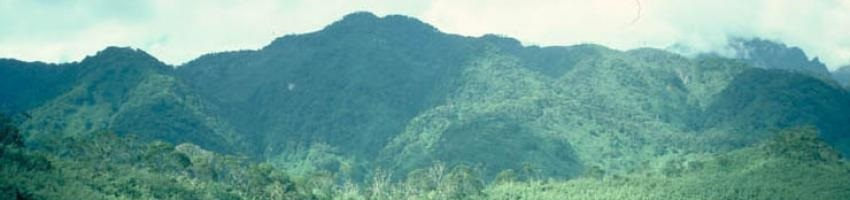

A protected area is a clearly defined geographical space, recognised, dedicated and managed, through legal or other effective means, to achieve the long term conservation of nature with associated ecosystem services and cultural values.
— IUCN definition of "protected area"
Protected areas or conservation areas are locations that are protected because they have significant ecological, geographical, historical or cultural value. Those protecting these areas face many challenges, such as the cost of enforcing the boundaries, poachers, environmental disasters, and the need of nearby humans.